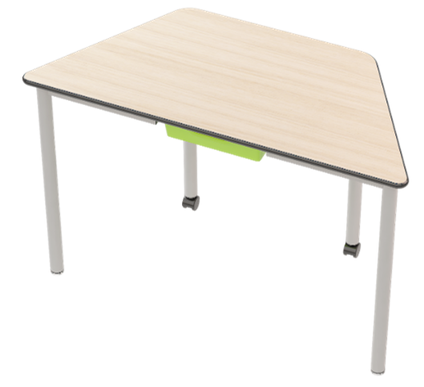
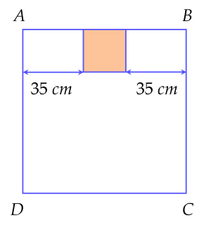

Câu 1. Đại số
0 / 0,22
Biểu diễn số $25$ thành tổng giá trị các chữ số của nó, ta được kết quả là
✗
A) $25 = 2 × 100 + 5$ .
Bạn chọn
○
B) $25 = 5 × 10 + 2$ .
○
C) $25 = 2 + 5$ .
✓
D) $25 = 2 × 10 + 5$ .
Đáp án đúng
🔍 Phân tích lỗi: Chưa chỉ ra được lỗi cụ thể
Câu này không có một phép tính tất định để đối chiếu, nên hệ thống chỉ dựa vào đề bài và lời giải đã lưu.
📘 Lời giải đã lưu
Biểu diễn số 25 thành tổng giá trị các chữ số của nó là: $25 = 2 × 10 + 5$. Kết quả là: $25$
Câu 2. Đại số
0,21 / 0,21
Biểu thức $16. 128$ viết dưới dạng một lũy thừa là
○
A) $2^{10}$ .
✓
B) $2^{11}$ .
Đáp án đúng
○
C) $2^{9}$ .
○
D) $2^{12}$ .
📘 Lời giải đã lưu
Biểu thức $16 \cdot 128$ được viết dưới dạng lũy thừa của 2 như sau:
$16 = 2^4$, $128 = 2^7$.
Do đó, $16 \cdot 128 = 2^4 \cdot 2^7 = 2^{4+7} = 2^{11}$.
Kết quả là: $2^{11}$.
Câu 3. Hình họcKhông vẽ hình
0,21 / 0,21
Chọn câu sai .
Hình thoi có
○
A) hai đường chéo cắt nhau tại trung điểm của mỗi đường.
✓
B) bốn góc bằng nhau.
Đáp án đúng
○
C) bốn cạnh bằng nhau.
○
D) hai đường chéo cắt nhau.
📘 Lời giải đã lưu
Hình thoi có bốn cạnh bằng nhau (đáp án C đúng). Hai đường chéo cắt nhau tại trung điểm của mỗi đường (đáp án A đúng). Hai đường chéo cắt nhau (đáp án D đúng). Tuy nhiên, hình thoi không có bốn góc bằng nhau (đáp án B sai vì chỉ có hai cặp góc bằng nhau). Kết quả là: B
Câu 4. Hình họcCó vẽ hình
0,21 / 0,21
Để tạo ra chiếc mặt như hình vẽ, người ta uốn thanh sắt tạo thành khung hình thang cân có cạnh bên bằng $47$ cm, các đáy bằng $48$ cm và $55$ cm.

Thanh sắt có chiều dài $399$ cm có thể uốn nhiều nhất bao nhiêu mặt bàn?
○
A) $3$ .
○
B) $1$ .
○
C) $5$ .
✓
D) $2$ .
Đáp án đúng
📘 Lời giải đã lưu
Để tạo một mặt bàn hình thang cân, cần uốn thanh sắt thành 4 cạnh: 2 đáy và 2 cạnh bên. Tổng chiều dài thanh sắt cho một mặt bàn là: $48 + 55 + 47 + 47 = 197$ cm. Số mặt bàn có thể uốn được là: $399 : 197 = 2$ dư $5$. Vậy thanh sắt có thể uốn được nhiều nhất là 2 mặt bàn. Kết quả là: $2$
Câu 5. Đại số
0 / 0,21
Biết $\overline{21\,a5b}$ chia hết cho $2$ , $5$ và $9$ . Giá trị biểu thức $2a+3b$ là
✗
A) $5$ .
Bạn chọn
✓
B) $2$ .
Đáp án đúng
○
C) $4$ .
○
D) $1$ .
🔍 Phân tích lỗi: Chưa chỉ ra được lỗi cụ thể
Câu này không có một phép tính tất định để đối chiếu, nên hệ thống chỉ dựa vào đề bài và lời giải đã lưu.
📘 Lời giải đã lưu
Số $\overline{21\,a5b}$ chia hết cho $2$ và $5$ nên $b = 0$.
Số chia hết cho $9$ nên tổng các chữ số chia hết cho $9$:
$2 + 1 + a + 5 + 0 = 8 + a$.
Để $8 + a$ chia hết cho $9$, ta có $a = 1$.
Tính $2a + 3b = 2 \cdot 1 + 3 \cdot 0 = 2$.
Kết quả là: 2
Câu 6. Đại số
0,21 / 0,21
Có bao nhiêu số nguyên tố lớn hơn $10$ và nhỏ hơn $20$ ?
✓
A) $4$ .
Đáp án đúng
○
B) $6$ .
○
C) $1$ .
○
D) $2$ .
📘 Lời giải đã lưu
Các số nguyên tố lớn hơn 10 và nhỏ hơn 20 là: 11, 13, 17, 19. Tổng cộng có 4 số. Kết quả là: 4
Câu 7. Đại số
0,21 / 0,21
Hình nào sau đây không có trục đối xứng?
○
A) Hình thoi.
○
B) Hình vuông.
✓
C) Hình bình hành.
Đáp án đúng
○
D) Hình thang cân.
📘 Lời giải đã lưu
Hình thoi có 2 trục đối xứng là hai đường chéo. Hình vuông có 4 trục đối xứng. Hình thang cân có 1 trục đối xứng là đường trung trực của đáy. Hình bình hành không có trục đối xứng. Kết quả là: C
Câu 8. Đại số
0,21 / 0,21
Hình nào sau đây có tâm đối xứng?
○
A) 
○
B)
○
C) 
✓
D)  Đáp án đúng
Đáp án đúng
📘 Lời giải đã lưu
Hình có tâm đối xứng là hình mà khi quay 180° quanh một điểm thì trùng với chính nó. Trong các đáp án, chỉ có hình D thỏa mãn điều kiện này. Kết quả là: D
Câu 9. Đại số
0 / 0,21
Trong các số $1,1;\,83;\,-\dfrac{1}{76};\,0$ , số nào là số nguyên dương?
✗
A) $0$ .
Bạn chọn
○
B) $-\dfrac{1}{76}$ .
✓
C) $83$ .
Đáp án đúng
○
D) $1,1$ .
🔍 Phân tích lỗi: Chưa chỉ ra được lỗi cụ thể
Câu này không có một phép tính tất định để đối chiếu, nên hệ thống chỉ dựa vào đề bài và lời giải đã lưu.
📘 Lời giải đã lưu
Số nguyên dương là số nguyên lớn hơn 0. Trong các số đã cho:
- $1,1$ là số thập phân dương, không phải số nguyên.
- $-\dfrac{1}{76}$ là số âm.
- $0$ không phải số nguyên dương.
- $83$ là số nguyên dương.
Kết quả là: $83$
Câu 10. Đại số
0,21 / 0,21
⚡Sự ra đời của Kỷ nguyên sắt cách đây $1\,200$ năm trước công nguyên .
⚡Sự ra đời của bê tông cách đây $200$ năm trước công nguyên .
⚡Máy cày được phát minh vào khoảng $201$ năm sau công nguyên .
Cách biểu diễn số nguyên dương và số nguyên âm để viết các số liệu được in đậm trong câu trên lần lượt là
○
A) $-1\,200;-200;-201$ .
○
B) $1\,200;-200;201$ .
✓
C) $-1\,200;-200;201$ .
Đáp án đúng
○
D) $-1\,200;200;-201$ .
📘 Lời giải đã lưu
Sự ra đời của Kỷ nguyên sắt cách đây $1\,200$ năm trước công nguyên được biểu diễn là $-1\,200$. Sự ra đời của bê tông cách đây $200$ năm trước công nguyên được biểu diễn là $-200$. Máy cày được phát minh vào khoảng $201$ năm sau công nguyên được biểu diễn là $201$. Do đó, các số liệu được biểu diễn lần lượt là $-1\,200;-200;201$. Kết quả là: $-1\,200;-200;201$
Câu 11. Đại số
0,21 / 0,21
Cho ba phép tính:
a) $(-72) - 5$ ;
b) $(-72) - (-5)$ ;
c) $950 - [72 - (-5)]$
Kết quả các phép tính trên lần lượt là
○
A) $77$ ; $-67$ ; $1017$ .
○
B) $-77$ ; $77$ ; $873$ .
○
C) $77$ ; $-67$ ; $873$ .
✓
D) $-77$ ; $-67$ ; $873$ .
Đáp án đúng
📘 Lời giải đã lưu
a) $(-72) - 5 = -72 - 5 = -77$ ;
b) $(-72) - (-5) = -72 + 5 = -67$ ;
c) $950 - [72 - (-5)] = 950 - [72 + 5] = 950 - 77 = 873$ .
Kết quả là: $-77$ ; $-67$ ; $873$.
Câu 12. Đại số
0,21 / 0,21
Phân tích $45$ thành tích của hai số nguyên ta được tích nào sau đây?
○
A) $(-3) . 15$ .
✓
B) $(-9) . (-5)$ .
Đáp án đúng
○
C) $15 . (-3)$ .
○
D) $(-45) . 1$ .
📘 Lời giải đã lưu
Tích của hai số nguyên phải bằng 45. Kiểm tra từng đáp án:
A) $(-3) . 15 = -45$
B) $(-9) . (-5) = 45$
C) $15 . (-3) = -45$
D) $(-45) . 1 = -45$
Kết quả là: $45$
Câu 13. Hình họcKhông vẽ hình
0 / 0,8
Một nền nhà có dạng hình vuông với cạnh là $6$ m.
(Nhấp vào ô màu vàng để chọn đúng / sai)
✗
a)
Chu vi nền nhà là $20$ m.
Em chọn: Đúng ·
Đáp án: Sai ·
0 / 0,2
✗
b)
Diện tích nền nhà là $36$ m ² .
Em chọn: Sai ·
Đáp án: Đúng ·
0 / 0,2
✗
c)
Để lát nền nhà, cần mua $100$ viên gạch hình vuông cạnh $0,6$ m.
Em chọn: Sai ·
Đáp án: Đúng ·
0 / 0,2
✗
d)
Nếu dùng gạch hình chữ nhật có chiều rộng $0,3$ m và chiều dài $0,4$ m, cần mua $200$ viên gạch.
Em chọn: Đúng ·
Đáp án: Sai ·
0 / 0,2
🔍 Phân tích lỗi: Chưa chỉ ra được lỗi cụ thể
Câu này không có một phép tính tất định để đối chiếu, nên hệ thống chỉ dựa vào đề bài và lời giải đã lưu.
📘 Lời giải đã lưu
a) Chu vi hình vuông là $4 \times 6 = 24$ m. Phát biểu 1 sai vì nói chu vi là $20$ m.\
b) Diện tích hình vuông là $6^2 = 36$ m². Phát biểu 2 đúng.\
c) Diện tích nền nhà là $36$ m². Diện tích mỗi viên gạch là $0,6^2 = 0,36$ m². Số viên gạch cần mua là $36 : 0,36 = 100$. Phát biểu 3 đúng.\
d) Diện tích mỗi viên gạch là $0,3 \times 0,4 = 0,12$ m². Số viên gạch cần mua là $36 : 0,12 = 300$. Phát biểu 4 sai.
Câu 14. Đại số
0,8 / 0,8
Vào tết Trung thu, lớp của Trang đã chuẩn bị các phần quà như nhau từ $240$ thanh sô cô la nhỏ và $160$ chiếc bánh trung thu để tặng các bạn nhỏ ở một trung tâm trẻ khuyết tật.
(Nhấp vào ô màu vàng để chọn đúng / sai)
✓
a)
Lớp Trang có thể chia được nhiều nhất $80$ phần quà.
Em chọn: Đúng ·
Đáp án: Đúng ·
0,2 / 0,2
✓
b)
Nếu số phần quà là $20$ thì mỗi phần quà có $12$ thanh sô cô la và $8$ chiếc bánh trung thu.
Em chọn: Đúng ·
Đáp án: Đúng ·
0,2 / 0,2
✓
c)
Số phần quà có thể chia được là một số tự nhiên bất kì lớn hơn $100$ .
Em chọn: Sai ·
Đáp án: Sai ·
0,2 / 0,2
✓
d)
Nếu lớp Trang chia thành $40$ phần quà thì sẽ dư ra $4$ thanh sô cô la và $2$ chiếc bánh trung thu.
Em chọn: Sai ·
Đáp án: Sai ·
0,2 / 0,2
📘 Lời giải đã lưu
a) Để chia nhiều nhất phần quà, ta tìm ƯCLN của 240 và 160. $240 = 2^4 \cdot 3 \cdot 5$, $160 = 2^5 \cdot 5$, nên $ \text{ƯCLN}(240, 160) = 2^4 \cdot 5 = 80 $. Do đó, phát biểu 1 Đúng.
b) Nếu có 20 phần quà, mỗi phần có $240 : 20 = 12$ thanh sô cô la và $160 : 20 = 8$ chiếc bánh. Phát biểu 2 Đúng.
c) Số phần quà có thể chia được là Ước chung của 240 và 160, tức là các ước của 80. Các ước của 80 là: 1, 2, 4, 5, 8, 10, 16, 20, 40, 80. Không có số nào lớn hơn 100. Phát biểu 3 Sai.
d) Nếu chia thành 40 phần quà, mỗi phần có $240 : 40 = 6$ thanh sô cô la và $160 : 40 = 4$ chiếc bánh. Không dư gì. Phát biểu 4 Sai.
Kết quả là: a) Đúng, b) Sai, c) Đúng, d) Sai
Câu 15. Hình họcKhông vẽ hình
0,43 / 0,43
Một vườn hình chữ nhật cho chiều dài là $105$ m và chiều rộng là $60$ m. Người ta muốn trồng cây xung quanh vườn sao cho mỗi góc vườn $1$ cây và khoảng cách giữa hai cây liên tiếp bằng nhau. Tính khoảng cách lớn nhất giữa hai cây liên tiếp ( Khoảng cách là số tự nhiên với đơn vị là mét)? Khi đó tổng số cây là bao nhiêu?
Kết quả của em
15
Đáp án: 15
Những cách viết tương đương về số được tính như nhau, nhưng đơn vị phải kèm theo.
📘 Lời giải đã lưu
Chu vi vườn là $2 \times (105 + 60) = 330$ m. Vì có 4 cây ở 4 góc, nên số khoảng cách giữa các cây là $330 : 15 = 22$. Khoảng cách lớn nhất giữa hai cây liên tiếp là $15$ m. Tổng số cây là $22 + 4 = 26$. Kết quả là: 15
Câu 16. Đại số
0,43 / 0,43
Có bao nhiêu số nguyên $x$ thỏa mãn $(x^2 - 6).(x^2 - 20) \lt 0$ ?
Kết quả của em
4
Đáp án: 4
Những cách viết tương đương về số được tính như nhau, nhưng đơn vị phải kèm theo.
📘 Lời giải đã lưu
Ta có bất phương trình $(x^2 - 6)(x^2 - 20) < 0$. Đặt $y = x^2$, bất phương trình trở thành $(y - 6)(y - 20) < 0$. Giải bất phương trình này, ta được $6 < y < 20$. Vì $y = x^2$, nên $6 < x^2 < 20$. Từ đó, $x$ phải thỏa mãn $-\sqrt{20} < x < -\sqrt{6}$ hoặc $\sqrt{6} < x < \sqrt{20}$. Các số nguyên trong khoảng này là $-4, -3, 3, 4$. Kết quả là: 4
Câu 17. Hình họcCó vẽ hình
0 / 1,67
Trên một mặt bàn hình vuông, người ta đặt một lọ hoa có đáy cũng là hình vuông sao cho một cạnh của đáy lọ hoa trùng với một cạnh của bàn tại chính giữa bàn ấy (như hình vẽ) . Khoảng cách ngắn nhất từ cạnh mặt bàn đến đáy lọ hoa là $35$ m, biết diện tích còn lại của mặt bàn là $6\,300$ cm ² . Tính cạnh của mặt bàn.

Bài làm của em
Gọi cạnh mặt bàn hình vuông là x (cm). Đáy lọ hoa cũng là hình vuông, áp vào cạnh AB tại chính giữa, hai phần còn lại của cạnh AB mỗi bên dài 35 cm.
Suy ra cạnh đáy lọ hoa là x − 35 − 35 = x − 70 (cm).
Diện tích phần mặt bàn còn lại bằng 6300 cm², tức x² − (x − 70)² = 6300.
Khai triển: x² − (x² − 140x + 4900) = 140x − 4900 = 6300, nên 140x = 11200 và x = 80.
Thử lại: cạnh bàn 80 cm, cạnh đáy lọ 10 cm, diện tích còn lại là 80² − 10² = 6400 − 100 = 6300 (cm²), khớp với đề.
Kết quả là: 80 cm
🤖 AI gợi ý: ✗ chưa đúng
🤖 Gợi ý của AI: Gợi ý AI minh họa trong bản demo tĩnh.
Kết quả AI tự tìm: Gọi cạnh mặt bàn hình vuông là x (cm). Đáy lọ hoa cũng là hình vuông, áp vào cạnh AB tại chính giữa, hai phần còn lại của cạnh AB mỗi bên dài 35 cm.
Suy ra cạnh đáy lọ hoa là x − 35 − 35 = x − 70 (cm).
Diện tích phần mặt bàn còn lại bằng 6300 cm², tức x² − (x − 70)² = 6300.
Khai triển: x² − (x² − 140x + 4900) = 140x − 4900 = 6300, nên 140x = 11200 và x = 80.
Thử lại: cạnh bàn 80 cm, cạnh đáy lọ 10 cm, diện tích còn lại là 80² − 10² = 6400 − 100 = 6300 (cm²), khớp với đề.
Kết quả là: 80 cm
Phần tự luận được tính 0 / 1,67 điểm theo
gợi ý của AI — AI chấm, tham khảo.
🔍 Phân tích lỗi: Chưa chỉ ra được lỗi cụ thể
Câu này không có một phép tính tất định để đối chiếu, nên hệ thống chỉ dựa vào đề bài và lời giải đã lưu.
📘 Lời giải đã lưu
Gọi cạnh mặt bàn hình vuông là x (cm). Đáy lọ hoa cũng là hình vuông, áp vào cạnh AB tại chính giữa, hai phần còn lại của cạnh AB mỗi bên dài 35 cm.
Suy ra cạnh đáy lọ hoa là x − 35 − 35 = x − 70 (cm).
Diện tích phần mặt bàn còn lại bằng 6300 cm², tức x² − (x − 70)² = 6300.
Khai triển: x² − (x² − 140x + 4900) = 140x − 4900 = 6300, nên 140x = 11200 và x = 80.
Thử lại: cạnh bàn 80 cm, cạnh đáy lọ 10 cm, diện tích còn lại là 80² − 10² = 6400 − 100 = 6300 (cm²), khớp với đề.
Kết quả là: 80 cm
Câu 18. Đại số
1,67 / 1,67
Thu gọn biểu thức
a) $A=(345 - 61 + 84)-(-61 + 116 + 345)$ .
b) $B=(x-47)-(x+59 - 81)+(35-x)$ .
Bài làm của em
a) Rút gọn từng ngoặc: $A = (345 - 61 + 84) - (-61 + 116 + 345)$. Tính trong ngoặc: $345 - 61 + 84 = 368$, $-61 + 116 + 345 = 400$. Vậy $A = 368 - 400 = -32$. Sau đó tính $-32 - (-61 + 116 + 345) = -32 - 400 = -432$.
b) Rút gọn từng ngoặc: $B = (x - 47) - (x + 59 - 81) + (35 - x)$. Tính trong ngoặc: $x + 59 - 81 = x - 22$, $35 - x = -x + 35$. Vậy $B = (x - 47) - (x - 22) + (-x + 35)$. Rút gọn: $x - 47 - x + 22 - x + 35 = -x + 10$.
Kết quả là: 120
🤖 AI gợi ý: ✓ đúng
🤖 Gợi ý của AI: Gợi ý AI minh họa trong bản demo tĩnh.
Kết quả AI tự tìm: a) Rút gọn từng ngoặc: $A = (345 - 61 + 84) - (-61 + 116 + 345)$. Tính trong ngoặc: $345 - 61 + 84 = 368$, $-61 + 116 + 345 = 400$. Vậy $A = 368 - 400 = -32$. Sau đó tính $-32 - (-61 + 116 + 345) = -32 - 400 = -432$.
b) Rút gọn từng ngoặc: $B = (x - 47) - (x + 59 - 81) + (35 - x)$. Tính trong ngoặc: $x + 59 - 81 = x - 22$, $35 - x = -x + 35$. Vậy $B = (x - 47) - (x - 22) + (-x + 35)$. Rút gọn: $x - 47 - x + 22 - x + 35 = -x + 10$.
Kết quả là: 120
Phần tự luận được tính 1,67 / 1,67 điểm theo
gợi ý của AI — AI chấm, tham khảo.
📘 Lời giải đã lưu
a) Rút gọn từng ngoặc: $A = (345 - 61 + 84) - (-61 + 116 + 345)$. Tính trong ngoặc: $345 - 61 + 84 = 368$, $-61 + 116 + 345 = 400$. Vậy $A = 368 - 400 = -32$. Sau đó tính $-32 - (-61 + 116 + 345) = -32 - 400 = -432$.
b) Rút gọn từng ngoặc: $B = (x - 47) - (x + 59 - 81) + (35 - x)$. Tính trong ngoặc: $x + 59 - 81 = x - 22$, $35 - x = -x + 35$. Vậy $B = (x - 47) - (x - 22) + (-x + 35)$. Rút gọn: $x - 47 - x + 22 - x + 35 = -x + 10$.
Kết quả là: 120
Câu 19. Đại số
1,67 / 1,67
Một ngày tại Paris có nhiệt độ là $-5° C$ . Theo dự báo thời tiết ngày hôm sau tăng thêm $3° C$ .
a) Nhiệt độ dự báo của ngày hôm sau sẽ là bao nhiêu?
b) Thực tế, nhiệt độ ngày hôm sau lại tăng thêm $8° C$ . Tìm nhiệt độ thực tế ngày hôm sau.
Bài làm của em
a) Nhiệt độ ngày hôm sau là: $-5 + 3 = -2^\circ C$. b) Nhiệt độ thực tế ngày hôm sau là: $-2 + 8 = 6^\circ C$. Kết quả là: 6
🤖 AI gợi ý: ✓ đúng
🤖 Gợi ý của AI: Gợi ý AI minh họa trong bản demo tĩnh.
Kết quả AI tự tìm: a) Nhiệt độ ngày hôm sau là: $-5 + 3 = -2^\circ C$. b) Nhiệt độ thực tế ngày hôm sau là: $-2 + 8 = 6^\circ C$. Kết quả là: 6
Phần tự luận được tính 1,67 / 1,67 điểm theo
gợi ý của AI — AI chấm, tham khảo.
📘 Lời giải đã lưu
a) Nhiệt độ ngày hôm sau là: $-5 + 3 = -2^\circ C$. b) Nhiệt độ thực tế ngày hôm sau là: $-2 + 8 = 6^\circ C$. Kết quả là: 6